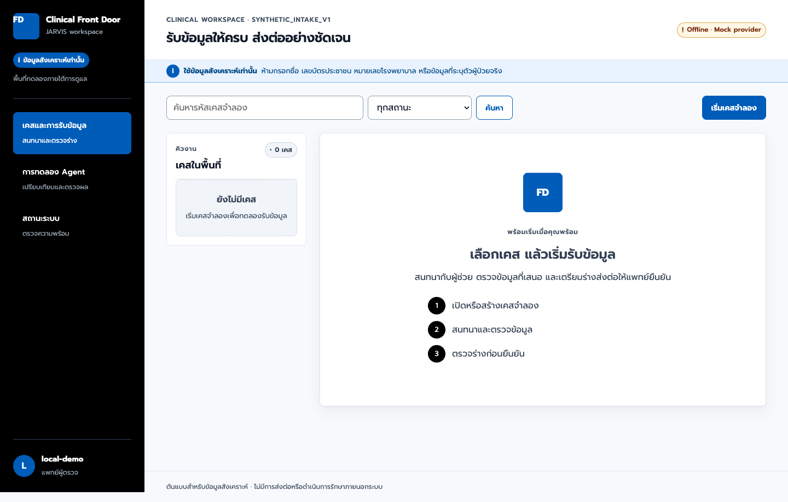
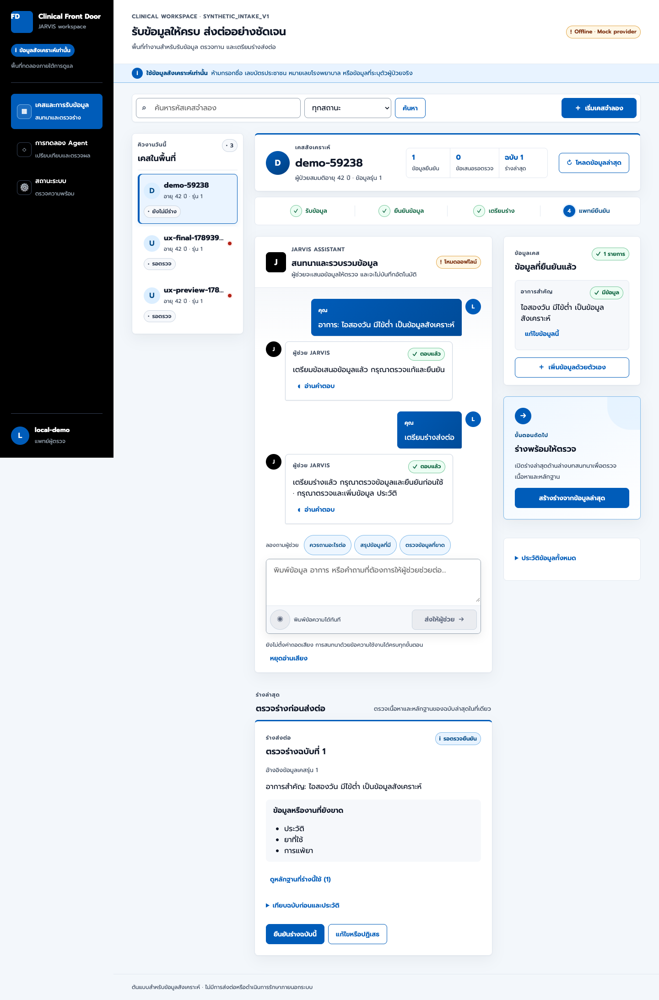

ซักประวัติ
ผู้ป่วยชาย 58 ปี เจ็บแน่นหน้าอกตั้งแต่เช้า ร้าวไปแขนซ้าย
บันทึกอาการสำคัญเป็นข้อเสนอแล้ว · ควรถามต่อ: เริ่มเจ็บกี่โมง มีเหงื่อแตกหรือหายใจลำบากหรือไม่
เริ่มประมาณ 7 โมงเช้า มีเหงื่อออก ไม่มีหายใจลำบาก
เสนอข้อมูล 2 รายการ · ยังไม่มีสัญญาณชีพ ควรวัดก่อนส่งต่อ
“…วัดความดันแล้วได้ 150 ต่อ 90 ชีพจร…”
ซักประวัติ
ผู้ป่วยชาย 58 ปี เจ็บแน่นหน้าอกตั้งแต่เช้า ร้าวไปแขนซ้าย
บันทึกอาการสำคัญเป็นข้อเสนอแล้ว · ควรถามต่อ: เริ่มเจ็บกี่โมง มีเหงื่อแตกหรือหายใจลำบากหรือไม่
เริ่มประมาณ 7 โมงเช้า มีเหงื่อออก ไม่มีหายใจลำบาก
เสนอข้อมูล 2 รายการ · ยังไม่มีสัญญาณชีพ ควรวัดก่อนส่งต่อ
“…วัดความดันแล้วได้ 150 ต่อ 90 ชีพจร…”
เริ่มประมาณ 7 โมงเช้า มีเหงื่อออก ไม่มีหายใจลำบาก
เสนอข้อมูล 2 รายการ · ยังไม่มีสัญญาณชีพ ควรวัดก่อนส่งต่อ
ซักประวัติ
ผู้ป่วยชาย 58 ปี เจ็บแน่นหน้าอกตั้งแต่เช้า ร้าวไปแขนซ้าย
บันทึกอาการสำคัญเป็นข้อเสนอแล้ว · ควรถามต่อ: เริ่มเจ็บกี่โมง มีเหงื่อแตกหรือหายใจลำบากหรือไม่
เริ่มประมาณ 7 โมงเช้า มีเหงื่อออก ไม่มีหายใจลำบาก
เสนอข้อมูล 2 รายการ · ยังไม่มีสัญญาณชีพ ควรวัดก่อนส่งต่อ
“…วัดความดันแล้วได้ 150 ต่อ 90 ชีพจร…”
คิวเคสวันนี้
demo-014
ต้องให้แพทย์ดูโดยเร็วต้นแบบวิจัย · ข้อมูลสังเคราะห์ร่างส่งต่อ ฉบับที่ 1
รอตรวจ09:20 · mock-v2 · design fixedผู้ป่วยชาย 58 ปี เจ็บแน่นหน้าอกร้าวไปแขนซ้ายตั้งแต่ 07:00 น. มีเหงื่อออก ไม่มีหายใจลำบาก ยังไม่มีสัญญาณชีพ
ประเมินฉุกเฉิน
ความดัน ชีพจร อัตราการหายใจ SpO₂ · ประวัติโรคประจำตัว · ยาที่ใช้
demo-014
ต้องให้แพทย์ดูโดยเร็วต้นแบบวิจัย · ข้อมูลสังเคราะห์Audit
เปรียบเทียบก่อน-หลังการปรับปรุงดีไซน์ (Design Redesign)
- ใช้ธีมมืดและมี Animation Orb ซึ่งดึงความสนใจของพยาบาลออกจากข้อมูลผู้ป่วย
- การ์ดทุกส่วนมีน้ำหนักสายตาเท่ากันหมด ทำให้มองข้ามระดับความเร่งด่วน (Urgency Under-triage)
- หน้าจอพยาบาลและแพทย์ปะปนกันใน URL เดียว ไม่แยกบทบาทการทำงาน
- ไม่ได้แยกแยะชัดเจนระหว่าง 'ข้อความถอดเสียง' กับ 'ข้อเท็จจริงที่ยืนยันแล้ว'

- ธีมสว่างคลีน (Gemini-inspired): ตัวอักษรคมชัด ผ่านมาตรฐาน WCAG AA 8.95:1
- Red Flags Banner เด่นชัด: แถบสีแดงพร้อมไอคอนเตือนฉุกเฉินด้านบนสุด ห้ามโมเดลลดทอน
- แยก 2 บทบาทชัดเจน:
Pratu Intake (/nurse)สำหรับพยาบาล และPratu Console (/platform)สำหรับแพทย์ - Human Confirmation Gate: มีกระบวนการ Review และยืนยันก่อนข้อมูลจะกลายเป็น Fact ทุกครั้ง
- Transparent Executed DAG: แสดงขั้นตอนการคำนวณที่ Replay ได้อย่างโปร่งใส
